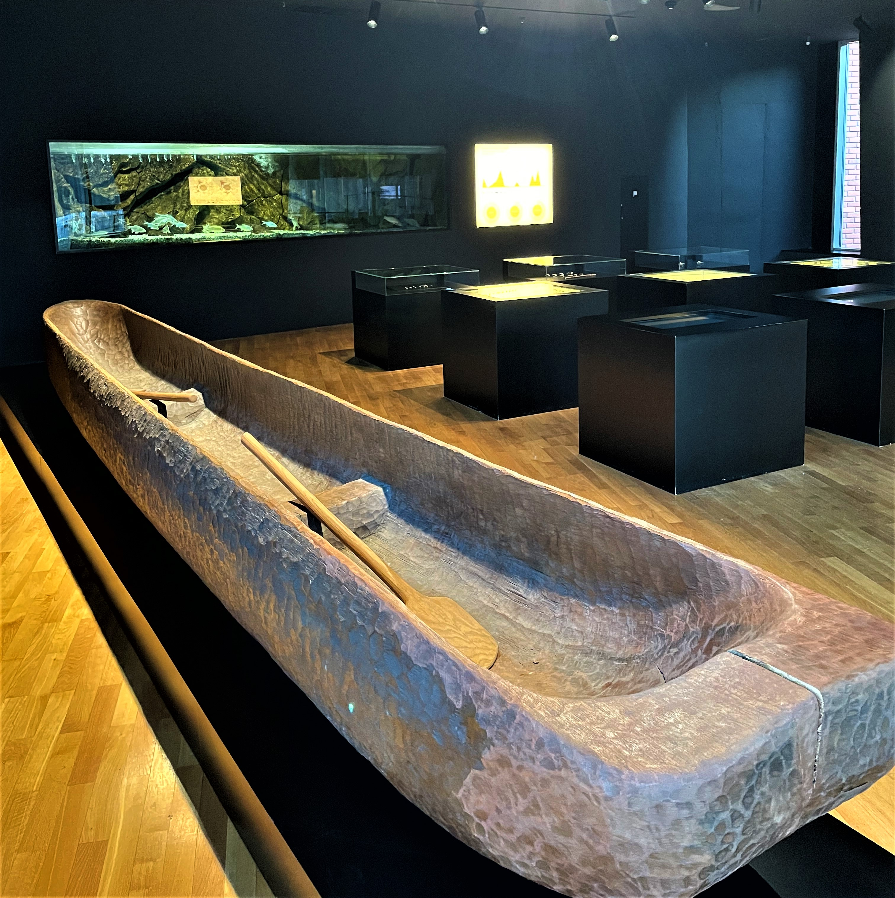
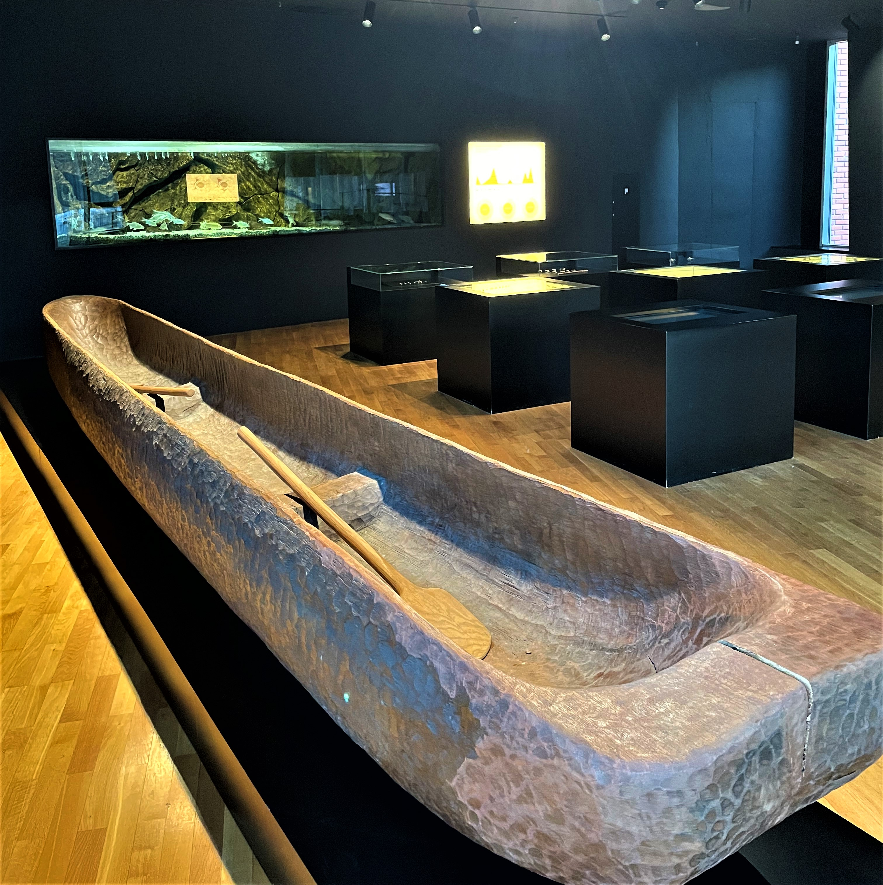

Tko su bili Vučedolci?
Vučedolska kultura bila je jedna od najvažnijih kultura ranog brončanog doba u Europi. Nastala je na prostoru koji obuhvaća današnju istočnu Hrvatsku, zapadnu Srbiju i dio Mađarske, ali je svoj vrhunac doživjela u Vučedolu, malom mjestu uz rijeku Dunav. Ova kultura nazvana je po arheološkom nalazištu Vučedol, koje je otkriveno 1897. godine. Značajnija istraživanja započela su sredinom 20. stoljeća, kada su pronađeni brojni predmeti koji svjedoče o naprednom načinu života tadašnjih ljudi. Vučedolci su živjeli u razdoblju kada su se dogodile velike promjene u tehnologiji i društvu – uveli su upotrebu metala u svakodnevni život i razvili složenije oblike organizacije zajednice.
 
